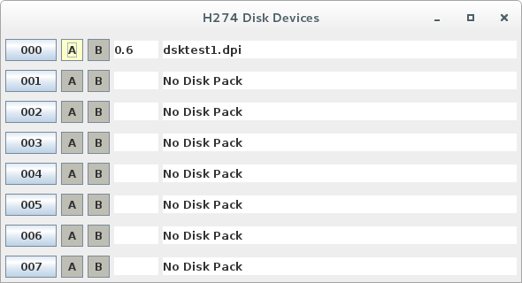

The model 274 disk drives (any similar model controller) implements
"random access" storage.
This implementation uses a window to provide basic control for the 8 drives.
The device is at the traditional address of 04/44.
Some details are lacking regarding various command specifics.
The Disks window is hidden by default. It may be made visible,
and raised to the top, using the Front Panel menu "I/O" and selecting Disks.
Closing the window only hides it, having no effect on the operation of the drives.
A full set of PERMIT buttons is provided for each drive: "A", "B",
"FMT" (format), and "DAT" (data). The buttons toggle when clicked,
illuminated means PERMIT writing. FMT allows formatting of tracks.
DAT allows writing of data records on tracks. A and B allow
finer-grained control over writing of records that were formatted
with A/B flags.
Due to lack of detailed information about these devices,
the following has been assumed until more information is available:
- The ADDRESS REGISTER is loaded/stored from 12 characters in memory,
referred to as "DPCCTTRRSWDL".
This register is closely-related to the record header on disk, which
is FCCTTRRDL ("F" is the flag, which includes A/B bits from "W").
MOD1 MPIOC documentation describes only the first 10 characters,
in a field that is said to "reflect the address register".
The address register is defined as:
- "D" is the drive/unit number (00-07)
- "P" is the disk pack number (not used - 00)
- "CC" is the cylinder
- "TT" is the track
- "RR" is the record
- "SW" is the protection/status bits (SSSSSS:SSWWWW)
- "DL" is the record data length
Some of these values are only used during formatting commands.
This implementation honors an RM to limit
the amount of the address register that is stored/loaded.
Formatting, not described in any documentation available, requires
the ability to specify the record length (DL) as well as to indicate
that a TLR record is to be formatted. The only mechanism for those seems
to have been the address register. So, "DL" is appended after known characters
and a special arrangement is made for a TLR bit in the "SW" characters.
Assumptions about fields are:
- "D" physically selected the device unit to perform the I/O.
- "CC" was compared to header data when locating records,
and written to new headers during formatting.
- "TT" would physically select the head to read/write through.
It is also compared to header data when locating records,
and written to new headers during formatting.
- "RR" was compared to header data when locating records,
and written to new headers during formatting.
It also included circuitry to increment it, for NEXT and EXTENDED operations.
- "S" was ignored during load, and presented during store as the status of the
last operation. Cleared after storing.
- "W" was used to generate the A/B FLAG character bits during formatting,
and for other operations was used to augment the PERMIT switches on the drive:
if the corresponding bit in "W" was not set, then the PERMIT switch was effectively OFF.
The bit 40 (octal) is interpretted as the TLR indicator for formatting (load only).
- "DL" (non-standard, not documented)
is used as the record length during formatting, and indicates
the actual record length after other commands.
- READ/WRITE INITIAL commmands will format record(s) beginning with the
index point on the track.
For WRITE, record address information comes from the ADDRESS REGISTER.
For READ, record header data is copied to the ADDRESS REGISTER where
it may be stored and examined in memory.
The WRITE EXTENDED variant will increment "RR" between records.
- READ/WRITE (plain) commmands will format record(s) beginning with the
current position on the track.
Record address information comes from the ADDRESS REGISTER.
"RR" is incremented before WRITE.
The WRITE EXTENDED variant will increment "RR" between records.
- SEARCH AND READ/WRITE commmands will locate the record identified in
the address register and read/write data only.
- SEARCH AND READ/WRITE NEXT commmands will increment the record number and
locate the record identified in
the address register and read/write data only.
This variation of the command will follow Track Linking Records automatically.
- EXTENDED versions operate on more than one record, governed by the
size of the buffer (RM in memory). This variation of the command, in the case
of SEARCH AND versions, will follow Track Linking Records automatically.
Termination of command variations is as follow:
| Command | Normal Termination | EXTENDED Termination |
|---|
| READ/WRITE | Record or RM | End of Track or RM |
| READ/WRITE INITIAL | Record or RM | End of Track or RM |
| SEARCH READ/WRITE | Record or RM | Error or RM* |
| SEARCH READ/WRITE NEXT | Record or RM* | Error or RM* |
* Command Follows TLR. Others return TLR as data.
- A transfer of 0 characters,
with no error indicated, implies that
there are no more records in the cylinder (end of TLR chain).
This may be a false-positive, it is likely that EOF had to be manually
indicated by the data (i.e. a "□EOD¢" item indicated the program should stop)
in which case a program that ran off the end of a file would get and error.
NOTE: The documentation for the IBM 1401, often referenced by Honeywell
as the target market for their computers, performed disk I/O
using a buffer containing both disk address and data. However, since the
H200/2000 series disk control units have a load/store address register command,
it seems unlikely they would have included the disk address with the data.
The description of PDT for Disk Devices shows no method of selecting a
disk drive (C3 is used for the command, and no other control characters
are defined). The PCB instruction does define commands that select a drive,
but only appear to select it for the duration of the operation.
It is currently being assumed that the ADDRESS REGISTER "D" character
selects the drive to be used for subsequent READ/WRITE operations.
There can be only one data transfer active at a time, but multiple
seek/restore operations on different drives could be active.
The PCB instructions to test busy can select different drives,
allow for multiple head-movement operations to be started and then
polled to see what drive is ready to do I/O.
Disk geometry is set as for Model 278 drives:
203 cylinders of 20 tracks (heads, surfaces) with 10400 raw characters per track.
Each record consumes 11 additional characters to the record length.
Raw capacity of a disk pack is 42 million characters.
The image file format consists of 4060 blocks of 10000 bytes each, representing
the tracks. The first 20 blocks (tracks) represent the first cylinder.
Within a track, data is laid out starting with a 1-byte Address Mark followed
by the header (FCCTTRRDL) followed by a 1-byte Data Mark, then DL bytes of
data followed by either another Address Mark or an "end of track mark".
Bytes from the End Mark to 10000th byte are ignored, although format commands
can write there. The file size grows as tracks get formatted, with "non-existent"
data effectively being "unformatted".
Each drive has a mount/unmount button that is labeled for the
drive number (000 - 007). Clicking this button opens a file dialog window
for selecting the disk image to be mounted (clicking Cancel will leave no
image mounted).
Additionally, "FMT" and "DAT" buttons permit writing of track format
and record data, respectively.
In addition, "A" and "B" buttons exist to provide values to match
against the A-File and B-File bits in record headers.
These bits are treated as a mask, and "0" is always writeable (if "DAT" permit is on).
So, if a record header has AB as "10", then that record can be written (only)
if "A" is ON, but "B" may be ON or OFF (don't-care).
Active drives will show current head position/selection
as Cylinder-Track, e.g. "000-06" for cylinder 0 head 6.
There is mention in the documentation of status bits in the control
address register:
"...in protect mode, an attempt to write results in a
protect violation status in the disk control address register."
However, there is no definition of the address register. It is assumed to be
similar to the disk record header and TLR data, i.e. CCTTRR, but some of those bits
are not used:
- cylinder max (known) value 0312
- track max 0023 (20 surfaces on 11-platter disk packs)
- record max 0733 (practical limit for 10400 character tracks,
record length equals header length)
Uncertain which bits were status
(or if an addition character existed in the address register),
and what statuses were provided. It would be logical
to choose the high-order character of the track (TT), since no known disk technology
of the time had more than 11 platter disk packs (except Models 260/261?).
Cylinder and record values are based on recording/stepping technology
and are not tied (as much) to physical characteristics of disk packs,
and thus could (and did) increase over time as technology advanced (limited
only by magnetic surface quality of the disk packs).